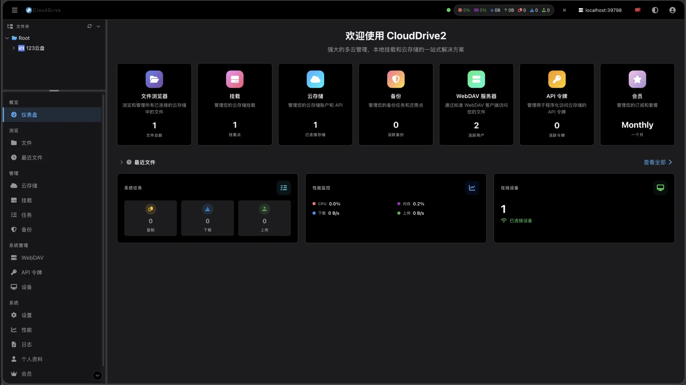
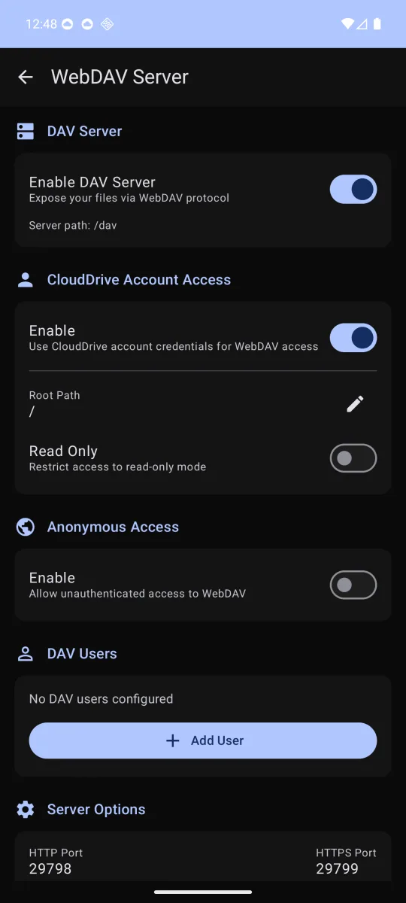

CloudDrive2 实测：把网盘变成本地盘，它在同类里排第几
对比 rclone、各网盘客户端自带挂载和系统方案，分析 CloudDrive2 在 NAS 支持、WebDAV 服务、直链播放三个维度的差异化与取舍。
把多个云盘「挂成本地盘」这件事，不是 CloudDrive2 发明的。在它之前，rclone 的 mount 子命令已经跑了很多年，各家网盘客户端也或多或少带过类似功能，macOS 用户甚至有 Mounty 这样的轻量方案。但如果你真在这条路上踩过坑——容器里挂载看不见、杀软拦驱动、想在电视上直接看片还要额外搭 WebDAV 服务——你会发现同类工具的差距远不只是「能不能挂载」这一条。
同类格局先拉一张表
我用挂载类工具的历史大概是：一开始图省事用网盘客户端自带的「虚拟盘」，体验是各家实现参差不齐、有的只支持单家网盘；后来转向 rclone，灵活是灵活，但写好一条能稳定跑的挂载命令要折腾半天，容器里更是要手动配好几层挂载传播，宿主机才能看见挂载点。再后来试了一些 Windows 上的聚合挂载工具，界面友好但稳定性参差不齐。
从clouddrive2官网了解到它的设计思路后，我的第一印象是：它不是从「挂载工具」这个点切入的，而是从「把网盘当本地存储用」这个完整场景切入的。挂载只是底层机制，它往上叠了一层 WebDAV 服务、一层浏览器管理页、一层 NAS 适配，甚至还考虑了影音媒体库的直链播放。这套组合拳打下来，定位就不一样了。

它做得比别家好的三件事
NAS 生态的适配深度，同类里罕见
这是我印象最深的一点。群晖、威联通、飞牛三家主流 NAS，CloudDrive2 都有现成的安装路径——群晖有社区维护的第三方套件，威联通直接走 Container Station 的 Docker Compose，飞牛 fnOS 甚至专门做了原生 fpk 套件。飞牛那个案例最能说明问题：容器里做 FUSE 挂载会撞上 fnOS 的命名空间限制，报 mount syscall failed in pid 1 namespace，这是平台侧硬限制，换什么容器参数都绕不开，官方于是专门为飞牛做了原生套件——能为单一平台的限制单独做产品适配，这个投入量级在同类工具里很少见。
对比下来，rclone 在 NAS 上就是一把梭的容器部署，挂载传播、设备映射全靠你自己对着 Compose 模板抄，出了问题社区能找到的排查资料远不如 CloudDrive2 多。有些聚合挂载工具甚至根本没考虑 NAS 场景，只做了桌面端。
WebDAV 服务开箱即用，省了额外搭服务的事
挂载把网盘变成本机的一块盘，但本机以外的设备怎么办？CloudDrive2 自带 WebDAV 服务——开关、根目录、用户管理都在设置页里配，参数细节在clouddrive2文档里有说明，默认端口 19798，路径加 /dav 就能从局域网里的任何设备连接。手机、平板、电视盒子、别的电脑，只要支持 WebDAV 的客户端都能连上来读。
这个设计的妙处在于它和挂载是两套独立的通路：桌面端继续用挂载盘拖文件看片，手机上装个 Infuse 或 nPlayer 填个 WebDAV 地址就能刮媒体库，两条路互不干扰。对比同类工具，rclone 要开 WebDAV 就得再写一条 serve webdav 命令，各家网盘客户端基本不提供 WebDAV 服务，想分享给局域网设备往往还要找第三方 WebDAV 中间层。

直链能力解决了影音场景的核心痛点
如果你用挂载类工具喂过 Emby 或 Jellyfin，会发现一个绕不开的问题：视频数据全部过宿主机这一跳，4K 原盘跑起来带宽先顶不住，延迟也高。CloudDrive2 对支持 302 直链的网盘（115、天翼等）做了特殊处理——媒体库播放时流量不经过宿主机，直接从网盘走直链到播放器。这个设计的收益是实实在在的：10G 带宽的 NAS 不用再当数据中转站，媒体库刮削的速度和稳定性都明显好于纯挂载方案。
为这些优势付出的代价
说它好也要说清楚代价，CloudDrive2 不是没有门槛。
从官方下载拿到安装包后，第一关是 FUSE 驱动。Windows 上是 WinFSP，macOS 上是 macFUSE，Linux 上是 FUSE3。驱动意味着什么？意味着装完可能需要重启，意味着个别杀毒软件会拦——哪怕安装包带代码签名，杀软对「装驱动、起系统服务」这类行为仍然高度警惕。我自己就遇到过安装完服务起不来，查了半小时才发现是 Windows Defender 把 WinFSP 驱动隔离了，最后把安装目录和驱动一起加进白名单才解决。
第二，非官方接入有天然的不稳定性。夸克网盘这类没有直连支持的，社区通行做法是借 alist 之类的聚合工具转一层 WebDAV 再接进来。套娃方案能用，但要接受丢东西：夸克的接口不在官方支持序列里，网页接口变更或风控调整都可能导致中途失效；数据要过聚合工具那一跳，速度受两层影响；秒传和直链看运气，哈希信息能不能透传取决于聚合工具的实现。
第三，WebDAV 协议的能力上限。WebDAV 是通用协议，走它只有列目录和读字节的能力——缩略图、云端搜索、秒传这类网盘原生能力传不过来，拖进度条、选音轨字幕没问题，但高码率原盘在带宽不足时还是会卡。这也是为什么官方同时提供了 API 令牌通道给另一台设备，两种方案按场景选。
选购结论：谁该用它
如果你有 NAS 并且想把网盘当本地存储用——备份任务、媒体库监控、WebDAV 分享一套拉通——CloudDrive2 是目前同类里适配最深入的选择，现成的套件和容器配置能省掉大量手动折腾的时间。
如果你只是想把某个网盘临时挂成本地盘用几天，或者不打算做影音媒体库，rclone 或 Mounty 这类轻量方案可能更合适，它们不依赖服务常驻，装完就能用，也不会碰到驱动和杀软拦截的问题。
如果你用的网盘全是没有直连支持的，也要想清楚：中转方案能跑通，但稳定性受中间层牵制，哪天官方直连支持了再切也不迟。
最后说一句实在的——CloudDrive2 值得用的原因不是它比同类多几个功能，而是它把「把网盘当本地存储用」这件事上的每一个环节都做了适配：桌面端挂载、NAS 套件、WebDAV 分享、直链播放，这些不是孤立功能，是同一套产品思路下的连贯设计。同类工具里能做到这一点的，目前不多。需要部署模板的话可以去GitHub拿，国内网络不畅时试试Gitee或GitCode的镜像。